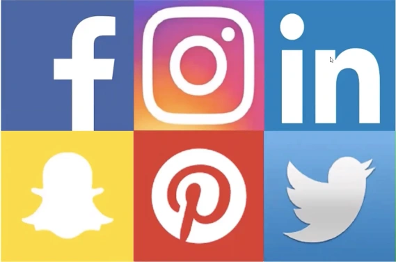

Social networking websites allow individuals, businesses and other organizations to interact with one another and build relationships and communities online. When companies join these social channels, consumers can interact with them directly.[3] That interaction can be more personal to users than traditional methods of outbound marketing and advertising.Social networking sites act as word of mouth or more precisely, e-word of mouth. or service acquisition and activity to a growing number of consumers is defined as an influence network. [5] Social networking sites and blogs allow followers to "retweet" or "repost" comments made by others about a product being promoted, which occurs quite frequently on some social media sites.
Social networking websites allow individuals, businesses and other organizations to interact with one another and build relationships and communities online. When companies join these social channels, consumers can interact with them directly.[3] That interaction can be more personal to users than traditional methods of outbound marketing and advertising. Social networking sites act as word of mouth or more precisely, e-word of mouth. or service acquisition and activity to a growing number of consumers is defined as an influence network. [5] Social networking sites and blogs allow followers to "retweet" or "repost" comments made by others about a product being promoted, which occurs quite frequently on some social media sites. [6] By repeating the message, the user's connections are able to see the message, therefore reaching more people.
Social networking websites allow individuals, businesses and other organizations to interact with one another and build relationships and communities online. When companies join these social channels, consumers can interact with them directly.[3] That interaction can be more personal to users than traditional methods of outbound marketing and advertising.Social networking sites act as word of mouth or more precisely, e-word of mouth.  or service acquisition and activity to a growing number of consumers is defined as an influence network. [5] Social networking sites and blogs allow followers to "retweet" or "repost" comments made by others about a product being promoted, which occurs quite frequently on some social media sites.